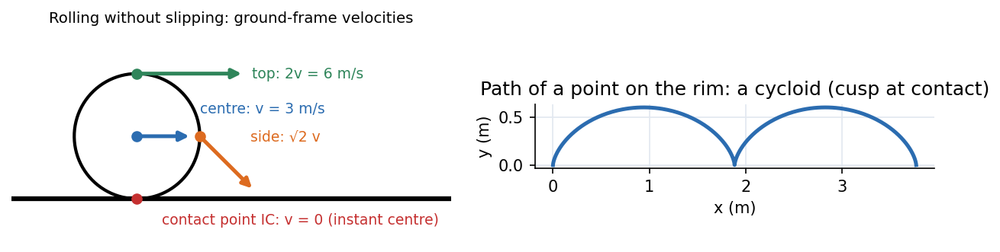

Engineering Mechanics · Dynamics · 3 min read
Plane Kinematics of Rigid Bodies
Every motion of a rigid body in a plane is, at each instant, a pure rotation about one point: the instantaneous centre of zero velocity (IC). Knowing where it is turns velocity problems into one-liners: (distance to the IC). Equivalently, relate two points by relative motion: . A body that rolls without slipping has its IC at the contact point.
Three tools
| Tool | Formula | Best when |
|---|---|---|
| Rotation about a fixed axis | a fixed pivot exists | |
| Relative velocity | two points on one body, one velocity known | |
| Instantaneous centre | , velocity the line to the IC | velocity directions of two points known (draw perpendiculars; they meet at the IC) |
| Rolling without slip | wheels, cylinders, gears |
For accelerations use : the IC itself generally does accelerate (it has zero velocity, not zero acceleration). Mechanism analysis with this machinery is developed in Velocity and Acceleration - Analytical Method and Velocity and Acceleration - Graphical Methods (Polygons).

Figure: A wheel of radius m rolling at m/s: rad/s. The contact point is at rest (the IC); the centre moves at m/s, the side point at m/s and the top point at twice the centre speed, m/s. Right, a rim point traces a cycloid: a loop-free arch whose cusps touch the ground with zero velocity.
🎯 Predict first: the top of a rolling wheel moves at what speed relative to the ground, and the bottom?
Top: (twice the centre speed). Bottom (contact): zero. A car's top-of-tyre moves faster than the car; the contact patch is momentarily stationary, which is why static friction (not sliding) acts there.
Method
- Draw the body and mark the points whose velocities you know or want.
- Directions: the velocity of any point is perpendicular to its line to the IC.
- Find the IC by drawing perpendiculars to two known velocity directions; the IC is where they cross. (Parallel velocities of unequal size: lines through tips meet at the IC.)
- Get from a point whose speed is known, then every other speed.
- Check with relative-velocity vector addition.
flowchart TD
A["two points: velocity directions known"] --> B["draw perpendiculars through each"]
B --> C["intersection = instantaneous centre IC"]
C --> D["omega = v_known / distance to IC"]
D --> E["any other point: v = omega x distance, perpendicular to its line to IC"]
Worked example
🔬 Wheel radius m rolling without slipping, m/s
IC at the contact point, distance m from G: rad/s. Top point: distance m from the IC: m/s horizontal. Side point (level with G): distance from the IC: m/s at below horizontal. Check: relative velocity: ✓. The arch length of the cycloid is m per revolution, though the wheel moves m.
⚠️ Assuming the IC has zero acceleration
The IC has zero velocity at that instant, but it accelerates (towards the wheel's centre, ). Use the relative-acceleration equation for accelerations, never "rotate about the IC" for .
💥 Using on a wheel that slips
holds only if the contact point is at rest. If the wheel skids or spins (a car on ice), and the IC is not at the contact point.
Quick quiz
Q1. A ladder slides down a wall; where is its IC?
At the intersection of the perpendicular to the wall at the top end (the top moves along the wall) and the perpendicular to the floor at the bottom end: a rectangle's far corner, whose locus is a circle.
Q2. A pulley (radius ) lifts a load at m/s with a rope not slipping. What is the pulley's ?
: the rope's speed equals the rim speed ( rad/s).
Connections
- Prerequisites: Particle Kinematics - Rectilinear and Curvilinear Motion, Vectors - Dot and Cross Products (the cross product )
- Next: Plane Kinetics of Rigid Bodies
- Cross-domain: KDoMs - MOC (instantaneous centres of linkages), Rotating Vectors - Phasors, Velocity Polygons and Complex Kinematics (rotating vectors are rigid-body kinematics), Gears, Transformers and Reflected Impedance (rolling contact = gear pitch circles).
Self-check
Metadata
- Status: draft · Type: concept · Difficulty: intermediate
- Course map: Engineering Mechanics - MOC